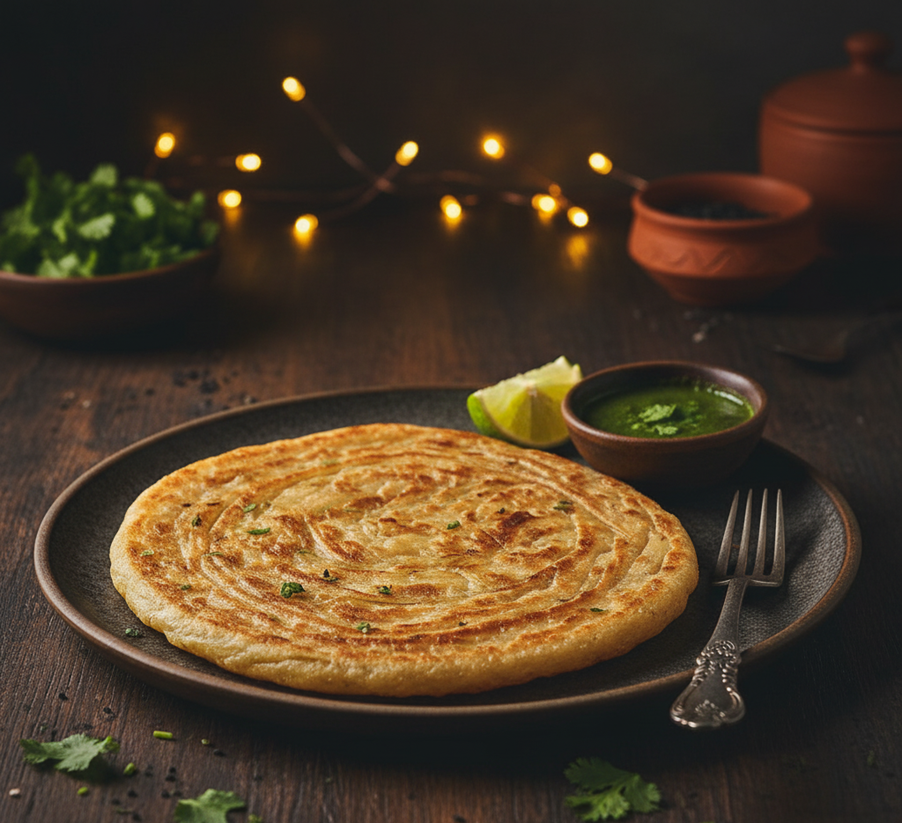

Paratha

Description
A paratha is a flaky, buttery, and unleavened flatbread from the Indian subcontinent. Made from whole wheat dough (atta), it is folded with oil or ghee, rolled out, and shallow-fried on a griddle until crisp and golden brown.
Ingredients
- Whole wheat flour (atta): 2 cups
- Water: 3/4 cup (adjust as needed)
- Ghee or oil: 3 tablespoons (for layering and frying)
- Salt: 1/2 teaspoon
Instructions
- Make dough: Mix flour, salt, and water in a bowl.
- Knead dough: Knead until smooth, cover, and rest for 15 minutes.
- Divide dough: Divide the dough into 4 equal-sized balls.
- Roll flat: Roll one ball into a thin 6-inch circle.
- Apply fat: Brush the surface with a thin layer of ghee.
- Fold layers: Fold like a fan or pleat to create layers.
- Roll coil: Roll the pleated strip into a tight Swiss-roll coil.
- Flatten coil: Roll the coil flat again into a 6-inch circle.
- Heat pan: Place the rolled paratha onto a hot, dry tawa.
- Flip over: Cook for 1 minute until bubbles form, then flip.
- Fry crisp: Spread ghee on top, flip again, and press until golden.
- Serve hot: Remove from heat and serve immediately with chai or curry.
Home